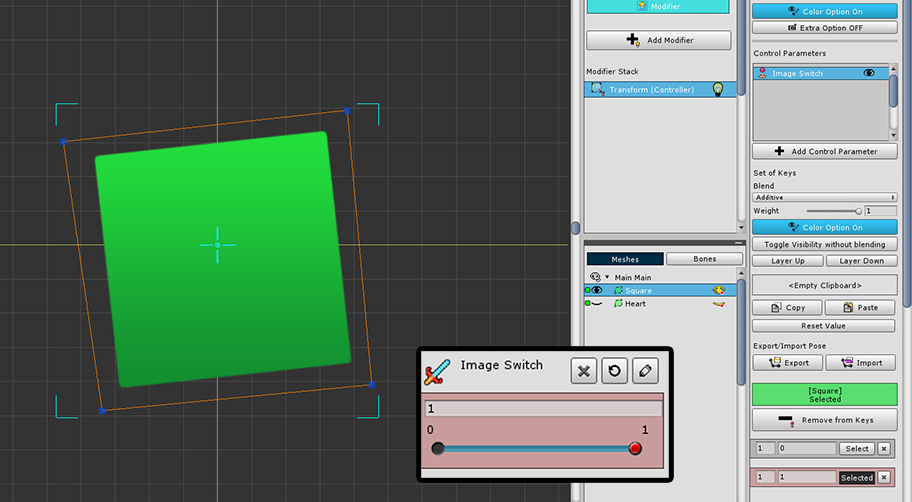
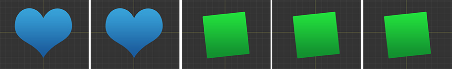

AnyPortrait > Manual > Show/hide without Translucent step
Show/hide without Translucent step
1.2.3
It is possible to show or hide meshes using a modifier with the "Color Option" set.
Using this function, it is possible to create the effect of switching two or more meshes.
And sometimes it is necessary that there are no "Translucent step" when the meshes are switched.


We created a sample in which two meshes are switched between each other with a Control Parameter named "Image Switch".
When the value of the Control Parameter is 0, “Blue Heart” appears, and when it is 1, “Green Square” appears.
You can see that "Transform (Controller)" modifier is used and the "Color Option" is turned on.

As the Control Parameter moves from 0 to 1, you can see that it gradually changes from "Blue Heart" to "Green Square" as above.
This is the result of a system with a translucent step for natural animation.
In general, this conversion process is appropriate, but in some cases this process may be unnecessary.

With the Control Parameter selected, press the "Toggle Visibility without blending" button located below the "Color Option" button.
When this feature is turned on, the process of showing and hiding the mesh will change discontinuously.

Now, when the Control Parameter changes from 0 to 1, the "Green Square" appears based on the median 0.5 and the "Blue Heart" is hidden.
This will be very useful when switching between meshes, as they appear without translucency.